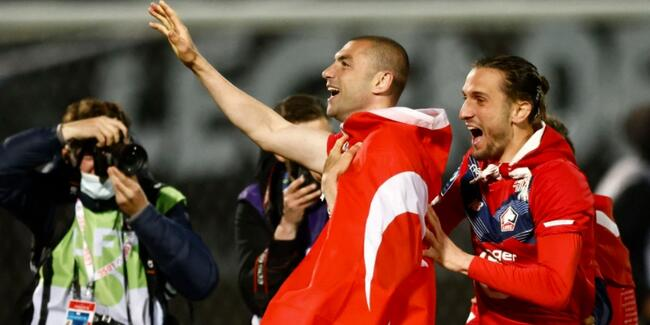

SPOR
FRANSA'DA TÜRK KASIRGASI ESTİ
Takımın elde ettiği başarıya, milli futbolcular Burak Yılmaz, Yusuf Yazıcı ve Zeki Çelik'in performansları önemli kaktı sağladı.
Oynadığı 38 karşılaşmadan 24 galibiyet, 11 beraberlik ve 3 yenilgi alan Lille, ligin güçlü takımlarından Paris Saint-Germain'i (PSG) geride bırakarak şampiyonluğunu ilan etti. Lille aynı zamanda, bu sezon topladığı 83 puanla bir sezonda elde edilen en yüksek puana ulaştı.
2013'ten bu yana Ligue 1'de hakimiyetini kuran PSG, son 8 yılda toplamda 7 şampiyonluk elde etmiş, bu süreçte sadece 2017'de şampiyonluğu Monaco'ya kaptırmıştı.
Burak Yılmaz, Yusuf Yazıcı ve Zeki Çelik'in formasını giydiği Lille ekibi bu sezon şampiyonluk kupasını müzesine götürerek PSG'nin 3 sezondur süren şampiyonluk serisini sona erdirdi.
Lille, en son eski Fransız teknik direktör Rudi Garcia'nın yönetiminde 2010-2011 sezonunda 76 puanla şampiyon olmuştu. Kuzey takımı, aynı sezon Fransa Kupası final maçında PSG'yi 1-0 yenerek kupanın sahibi olmayı da başardı. Böylece Lille sezonu iki kupayla tamamladı. Lille, bundan önce 1946 ve 1954 yıllarında da şampiyonluğunu ilan etti.
Lige 11. sırada başladı, lider bitirdi
İlk hafta evinde Rennes ile 1-1 berabere kalarak 11. sırada sezona başlayan Lille, sonraki 6 maçında 5 galibiyet ve 1 beraberlik alıp, 7. haftada liderlik koltuğuna otururdu.
Ligde ilk 3'ten kopmayan Lille, 22. haftada konuk ettiği Dijon'u milli futbolcu Yusuf Yazıcı'nın golüyle 1-0 yenerek yeniden birinci sıraya yerleşti. Ligin 30. haftasında Nimes'e 2-1 kaybedip, zirve koltuğunu PSG'ye kaptıran Fransız ekibi, 31. haftada deplasmanda PSG'yi 1-0 yenerek liderliği yeniden devraldı ve sezon sonuna kadar da yerini korudu.
Milli futbolcular Burak Yılmaz, Yusuf Yazıcı ve Zeki Çelik, Lille'in bu sezonki başarısında önemli rol oynadı. Lille'in bu sezon attığı 64 golün 26'sını milli futbolcular kaydetti.
Burak Yılmaz, sezon içinde sakatlık geçirmesine rağmen özellikle ligin son haftalarında attığı gollerle takımının şampiyonluk yarışında avantajlı konumda bulunmasına büyük katkı sağladı.
Ligin son haftalarında Lille, Olympique Lyon karşısında 2-0 geriye düştüğü maçı Burak Yılmaz'ın golleri ve gol pasıyla 3-2 kazandı. Lille, aldığı bu galibiyetle şampiyonluk yarışında önemli 3 puan kazanmış, Burak Yılmaz'ın serbest vuruştan attığı gol de nisan ayının en iyisi seçilmişti.
Lille, Lyon'un dışında Nice ve Lens ekiplerini de Burak Yılmaz'ın golleriyle mağlup etti.
Ligde bu sezon çıktığı 28 maçta 16 gol kaydeden Burak Yılmaz, takımının en skorer ismi konumunda. 35 yaşındaki forvet, Lille'de aralık ve nisan aylarının futbolcusu seçildi.
Taraftarların büyük sevgisini kazanan Burak Yılmaz, Avrupa'nın en büyük 5 liginde 35 yaş ve üstü futbolcular arasında Juventus'un Portekizli yıldızı Cristiano Ronaldo'dan sonra en çok gol atan oyuncu oldu.
Temmuz 2020'de Lille'e transfer olan Burak Yılmaz'ın başarılı performansı Fransız basınının ve Spor yorumcularının da dikkatini çekti. Fransız basını, "Kral" olarak adlandırdığı Burak Yılmaz'ın, şampiyonlukta önemli katkısı olduğunu vurgulayan haberler yazdı.
Ligue 1'de bu sezon 32 maçta forma giyen Yusuf Yazıcı'nın 7 golü bulunurken, Zeki Çelik de 29 karşılaşmada 3 gol kaydetti.
Yusuf Yazıcı, ayrıca UEFA Avrupa Ligi'nde iki maçta üst üste "hat-trick" yaptı. Burak Yılmaz, Yusuf Yazıcı ve Zeki Çelik takımda en çok forma giyen futbolculardan arasında yer aldı.